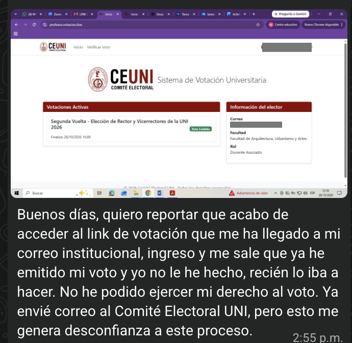

Las fallas más graves de seguridad con datos de ciudadanos en el Perú entre 2022 y octubre de 2026: qué se expuso, cuánto, quién lo reconoció y qué datos tuyos circulan hoy.
Elección de rector, segunda vuelta: un docente denuncia que al abrir el enlace de votación de su correo el sistema ya marcaba su voto como “emitido”. Si se confirma, es suplantación de voto: un indicio de fraude que el Comité Electoral debe aclarar antes de proclamar resultados. Cuando un enlace por correo basta para votar, el correo es la identidad, y los correos institucionales ya circulan.
Y a las 14:38 otro elector no pudo entrar a su cuenta institucional: “tu configuración no cumple la política de verificación en dos pasos de tu organización”. A uno le votaron; a otro no lo dejan entrar. Dos fallas de identidad el mismo día, en la misma elección.
Reportes de electores; sin respuesta pública del Comité al cierre.
Ver el caso →
Las cifras no se suman: una misma persona aparece en varias bases. Casos sin cifra (PIDE 2022, DIRIN 2025, afirmaciones de oct-2026) no se grafican.
Ver el peor escenario con IA → La propuesta: reset de llaves, no de personas
Cada caso muestra sus fuentes periodísticas u oficiales. Confirmado o reconocido: la entidad admitió la exposición. Alerta oficial / en investigación: hubo alerta del CNSD o la empresa admitió investigar sin desmentir. Afirmado, sin verificar: solo existe la afirmación del atacante en foros. Negado: la entidad niega la brecha. Las cifras de registros son las publicadas por la prensa o el atacante; no se auditaron. Datos en data/incidentes.js; correcciones a carlos@cardenas.pe.